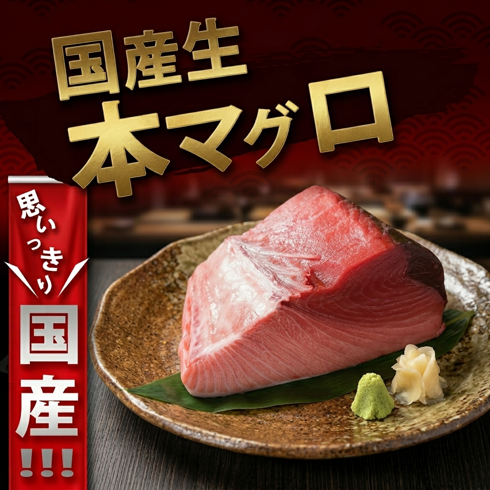
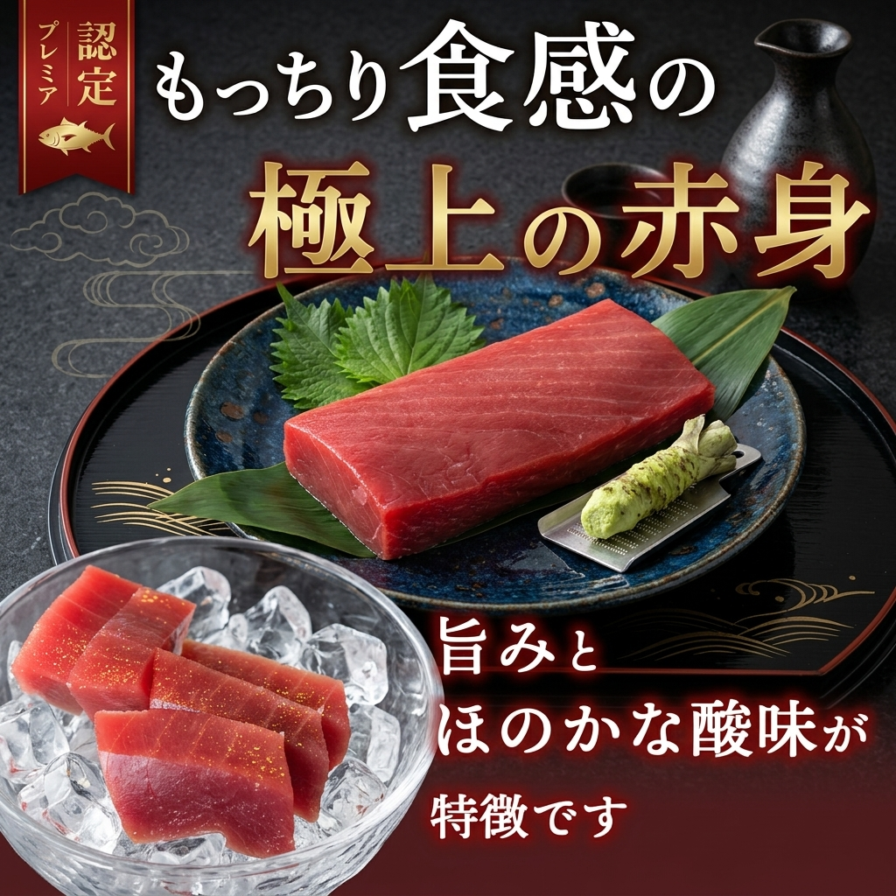

IMAGE CREATION
IMAGE CREATION / BANNER


マグロの美味しさを伝えることをテーマにしたWebバナーを制作しました。まず自分でラフスケッチから構成を考え、デザインの方向性を固めた後、AIツール（nanobanana2）に構成やクオリティ向上のためのブラッシュアップ案を提案してもらいました。そのフィードバックをもとに、最終的な仕上げはPhotoshopで自ら行い、より訴求力の高いバナーに仕上げています。
限られたスペースの中で「マグロの美味しさ」が一目で伝わるよう、写真の見せ方・文字量・カラーバランスを徹底的に調整しました。AIによる客観的なフィードバックを取り入れることで、自分では気づきにくい構成上の課題を改善し、視線誘導や情報の優先順位をより明確にしています。